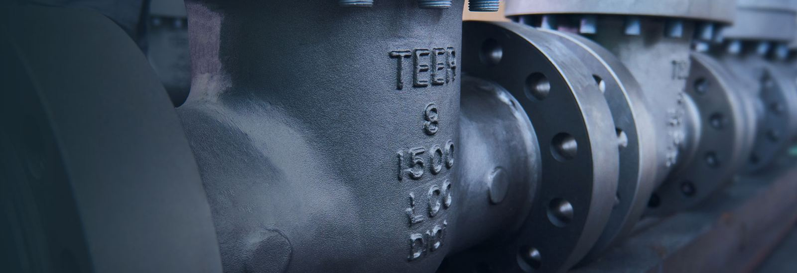

Flow Control — powered by Fabflow Control
Fabflow Control Pty Ltd supplies engineered valves and pumps to the energy, resources, water, and power sectors — working directly with established manufacturing partners to deliver hardware that meets the operating conditions, standards, and lead-time demands of industrial procurement.


TEER — Valves Partner
Ball, check, cryogenic (to -196°C), gate, and globe valves, plus a dedicated API 6A/16C catalog for oil-and-gas service — sized and certified for the pressures, temperatures, and media our clients actually run.
ValvesDepamu — Pumps Partner
Hangzhou Depamu Pumps Technology Co., Ltd. — 30 product families across 9 categories: metering, reciprocating, dosing packages, pneumatic diaphragm, supercritical extraction, screw, rotor-lobe, gear, and centrifugal pumps.
PumpsNeed a flow control quote today?
Fabflow Control operates its own live site for enquiries, spec sheets, and quotations — reach their team directly.